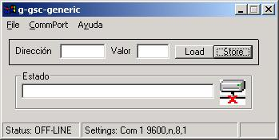
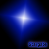

|
 |
|
|
1) No se ha detectado ningún Stargate |
2) Detectado un Stargate Genérico, implementado en una tarjeta SkyPic |
|
STAR-GENERIC: CLIENTE PARA STARGATE GENERICO (Versión Windows) |
|
 |
|
Para probar el Stargate genérico, se ha desarrollado un cliente gráfico de pruebas, star-generic.. Nos permite acceder al mapa de memoria del microcontrolador de una forma fácil y sencilla, y realizar diferente pruebas. Resulta muy útil para:
Comprobar si una implementación de un Stargate genérico funciona
Comprobar que los servicios básicos de cualquier Stargate convencional funcionan
Acceder a todos los recursos del microcontrolador de una forma sencilla, por ejemplo para sacar información por su puertos o leer sus entradas
Sirve de programa modelo para la creación de otros clientes más complejos
Plataforma: Windows
Librerías gráficas: No son necesarias
Lenguaje: Visual Basic
Dependencias: Librerías de Visual Basic (incluidas en el paquete de instalación)
Licencia: GPL
La ventana principal muestra la información sobre el estado de la conexión y el Stargate detectado. Regularmente se hace un PING para actualizar el estado de la conexión y al detectarse un nuevo stargate se identifica (Servicio ID).
|
 |
|
|
1) No se ha detectado ningún Stargate |
2) Detectado un Stargate Genérico, implementado en una tarjeta SkyPic |
El cliente está constantemente chequeando el estado de la conexión. Si se pierde nos informa. Es posible conectar y desconectar Stargates "en caliente". Si se conecta un nuevo Stargate, el cliente lo identificará.
Sólo en el caso de que sea un Stargate genérico, el usuario tendrá acceso a los servicios LOAD y STORE.
|
última versión (1.0) |
|
vb-sgc-generic-src.zip (365KB) |
Ficheros fuentes y ejecutable. Versión 1.0 |
Proyecto Stargate: Página principal del proyecto
servicios básicos: PING, ID
Stargate genérico: Servicios LOAD y STORE
Stargate Servos8 : Permite mover servos
tarjeta CT6811: Plataforma donde se pueden implementar Stargates
Este programa se distribuye bajo licencia GPL
06/Febrero/2006: Publicada versión 1.0